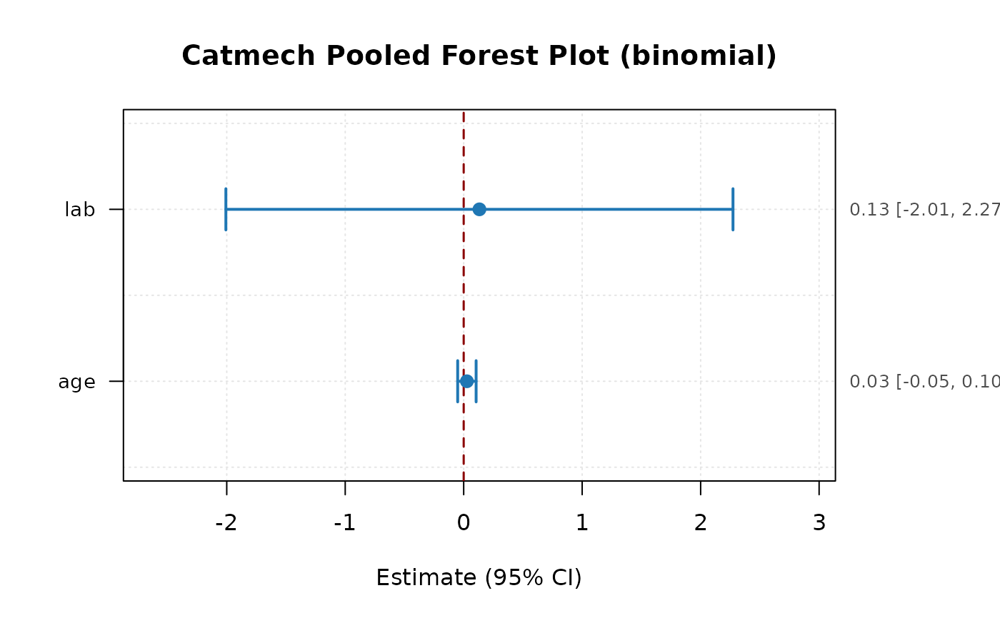

Plot pooled GLM coefficients (Forest Plot)
Usage
# S3 method for class 'catmech_pooled_glm'
plot(
x,
terms = NULL,
intercept = FALSE,
exponentiate = NULL,
col_point = "#1f77b4",
col_ci = "#1f77b4",
col_ref = "darkred",
lwd = 2,
pch = 19,
cex = 1.2,
main = NULL,
xlab = NULL,
...
)Arguments
- x
A `catmech_pooled_glm` object.
- terms
Character vector of terms to plot (default `NULL` for all).
- intercept
Logical: include intercept (default `FALSE`).
- exponentiate
Logical: exponentiate estimates (default `TRUE` if available).
- col_point
Point color (default `"#1f77b4"`).
- col_ci
CI color (default `"#1f77b4"`).
- col_ref
Null reference line color (default `"darkred"`).
- lwd
Line width (default 2).
- pch
Point symbol (default 19).
- cex
Point size (default 1.2).
- main
Plot title.
- xlab
X-axis label.
- ...
Additional arguments passed to [graphics::plot()].
Examples
set.seed(123)
n <- 40
df <- data.frame(
lab = stats::rnorm(n, 10, 2),
age = stats::rnorm(n, 50, 10),
y = stats::rbinom(n, 1, 0.4)
)
df$lab_ref <- df$lab
df$lab_ref[11:n] <- NA
# lab is a predictor below, so the outcome y joins the imputation model.
res <- catmech_reference(df, value = "lab", reference = "lab_ref",
predictors = c("age", "y"), m = 2, seed = 1)
pooled <- catmech_pool_glm(res, y ~ lab + age, family = stats::binomial())
plot(pooled)
